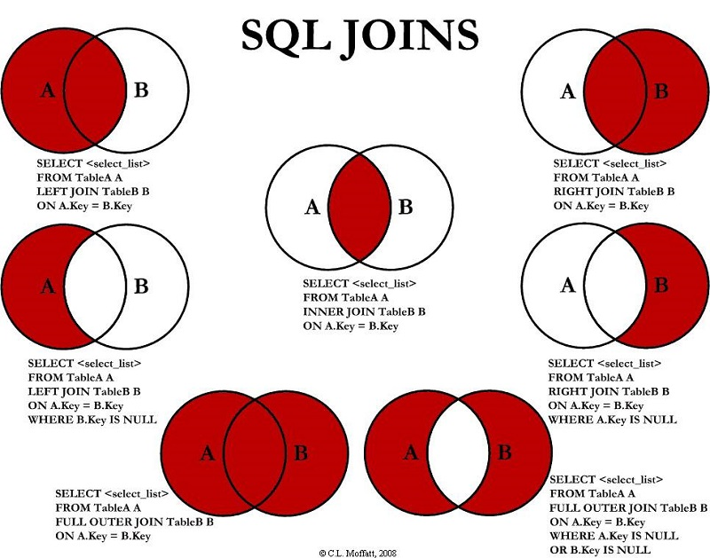

2. SQL
2.0. Claves
En las BD Relacionales existe el concepto de clave que hac referencia al modo de identificar una fila o registro de forma única. Existen dos tipos de claves, primaria y ajena
2.0.1. Clave primaria
Una clave primaria es un campo (o conjunto de campos) que identifica de manera única cada fila en una tabla. Es fundamental para garantizar la integridad de los datos y que no existan filas duplicadas.
Características:
- Única: No puede haber dos filas en una tabla con el mismo valor en la clave primaria.
- No Nulo: Los valores de una clave primaria no pueden ser nulos.
- Estable: El valor de la clave primaria no debe cambiar frecuentemente, ya que está relacionado con otras tablas.
Ejemplo en SQL:
CREATE TABLE Clientes (
id_cliente INT PRIMARY KEY, -- Clave primaria
nombre VARCHAR(100),
email VARCHAR(100)
);
2.0.2 Clave ajena
Una clave ajena es un campo o conjunto de campos en una tabla que se utiliza para establecer y reforzar un vínculo entre dos tablas. La clave ajena en una tabla hace referencia a la clave primaria de otra tabla.
Características: - Integridad Referencial: Las claves ajenas aseguran que los valores en una tabla coincidan con los valores en otra tabla. - Relación entre tablas: Una clave ajena crea una relación entre dos tablas, lo que permite mantener la coherencia de los datos. - Dependencia de clave primaria: Siempre hace referencia a una clave primaria o candidata en otra tabla.
Ejemplo en SQL:
CREATE TABLE Pedidos (
id_pedido INT PRIMARY KEY, -- Clave primaria de la tabla Pedidos
fecha_pedido DATE,
id_cliente INT, -- Clave ajena que referencia la tabla Clientes
FOREIGN KEY (id_cliente) REFERENCES Clientes(id_cliente) -- Definimos la clave ajena
);
2.1. Comandos
Existen tres tipos de comandos SQL:
- Los DDL (Data Definition Language) que permiten crear y definir nuevas bases de datos, campos e índices.
- Los DML (Data Manipulation Language) que permiten generar consultas para ordenar, filtrar y extraer datos de la base de datos.
- Los DCL (Data Control Language) que se encargan de definir los permisos sobre los datos.
Revisaremos los dos primeros.
2.2. DDL
2.2.1. CREATE
Este comando crea un objeto dentro del gestor de base de datos. Puede ser una base de datos, tabla, índice, procedimiento almacenado o vista.
CREATE DATABASE menagerie;
CREATE TABLE pet (name VARCHAR(20),
owner VARCHAR(20),
species VARCHAR(20),
sex CHAR(1),
birth DATE,
death DATE);<details>
2.2.2. ALTER
Este comando permite modificar la estructura de un objeto. Se pueden agregar/quitar campos a una tabla, modificar el tipo de un campo, agregar/quitar índices a una tabla, modificar un trigger, etc.
ALTER TABLE 'NOMBRE_TABLA' ADD nuevo_campo INT;
ALTER TABLE 'NOMBRE_TABLA' RENAME COLUMN nombre_antiguo TO nombre_nuevo;
2.2.3 DROP
Este comando elimina un objeto de la base de datos. Se puede combinar con la sentencia ALTER.
DROP TABLE 'NOMBRE_TABLA';
DROP DATABASE 'BASEDATOS';
ALTER TABLE 'NOMBRE_TABLA' DROP COLUMN NOMBRE_COLUMNA;
2.2.4. TRUNCATE
Este comando borra todo el contenido de una tabla, pero no borra la tabla.
TRUNCATE TABLE 'NOMBRE_TABLA';
2.3. DML
2.3.1. INSERT
Una sentencia INSERT de SQL agrega uno o más registros a una (y sólo una) tabla en una base de datos relacional. Forma básica:
INSERT INTO 'tabla' ('columna1', ['columna2,...'])
VALUES ('valor1', ['valor2,...'])
INSERT INTO agenda_telefonica
VALUES ('Jhonny Aguiar', 080473968);
2.3.2 UPDATE
Una sentencia UPDATE de SQL es utilizada para modificar los valores de un conjunto de registros existentes en una tabla. Ejemplo:
UPDATE mi_tabla SET campo1 = 'nuevo valor campo1' WHERE campo2 = 'N';
2.3.3. DELETE
Una sentencia DELETE de SQL borra uno o más registros existentes en una tabla.
Forma básica:
DELETE FROM 'tabla' WHERE 'columna1' = 'valor1'
DELETE FROM My_table WHERE field2 = 'N';
2.4. Cláusulas
Las cláusulas son condiciones de modificación utilizadas para definir los datos que desea seleccionar o manipular.
- FROM: Utilizada para especificar la tabla de la cual se van a seleccionar los registros.
- GROUP BY: Utilizada para separar los registros seleccionados en grupos específicos.
- HAVING: Utilizada para expresar condición que debe satisfacer cada grupo.
- ORDER BY: Utilizada para ordenar los registros seleccionados de acuerdo con un orden específico.
- WHERE: Utilizada para determinar los registros seleccionados en la cláusula FROM.
SELECT campos FROM tabla
WHERE campo=X
ORDER BY campo2
GROUP BY campos3 HAVING suma>3
2.5. Operadores
- Operadores Lógicos: AND, OR y NOT
- Operadores de comparación: <, >, <>, <=, >=, BETWEEN, LIKE, In
2.6. Funciones de agregado
Las funciones de agregado se usan dentro de una cláusula SELECT en grupos de registros para devolver un único valor que se aplica a un grupo de registros. Los campos que aparecen en el SELECT que no son funciones de agregado deben aparecer en la clausula GROUP BY.
Funciones:
- AVG
- COUNT
- SUM
- MAX
- MIN
SELECT Dpto, AVG(Sueldo)
FROM Empleados
GROUP BY Dpto;
2.7. Consultas
Consultas de selección se utilizan para indicar al motor de datos que devuelva información de las bases de datos, esta información es devuelta en forma de conjunto de registros. Este conjunto de registros es modificable.
SELECT Campos FROM Tabla;
SELECT Nombre, Telefono FROM Clientes;
2.7.1. Consultas de selección básicas
Ordenar los registros con ORDER BY:
SELECT CodigoPostal, Nombre, Telefono
FROM Clientes
ORDER BY CodigoPostal DESC , Nombre ASC;
2.7.2. Consultas con predicado
TOP: Devuelve un cierto número de registros que entran en un rango especificado por una cláusula ORDER BY.
SELECT TOP 25 Nombre, Apellido
FROM Estudiantes
ORDER BY Nota DESC;
DISTINCT: Omite los registros que contienen datos duplicados en los campos seleccionados. Para que los valores de cada campo listado en la instrucción SELECT se incluyan en la consulta deben ser únicos.
SELECT DISTINCT Apellido FROM Empleados;
2.8. Criterios de selección
Operadores lógicos:
SELECT *
FROM Empleados
WHERE Edad > 25 AND Edad < 50;
SELECT *
FROM Empleados
WHERE (Edad > 25 AND Edad < 50) OR Sueldo = 100;
SELECT *
FROM Empleados
WHERE NOT Estado = 'Soltero';
SELECT *
FROM Empleados
WHERE (Sueldo > 100 AND Sueldo < 500)
OR (Provincia = 'Madrid' AND Estado = 'Casado');
Operador BETWEEN:
SELECT *
FROM Pedidos
WHERE CodPostal Between 28000 And 28999;
Operador LIKE: Se utiliza para comparar una expresión de cadena con una expresión SQL.
SELECT *
FROM personas
WHERE nombre LIKE 'AN%'
SELECT *
FROM Pedidos
WHERE Provincia In ('Madrid', 'Barcelona', 'Sevilla');
2.9. Agregación
AVG:
SELECT Avg(Gastos) AS Promedio
FROM Pedidos
WHERE Gastos > 100;
SELECT Min(Gastos) AS ElMin
FROM Pedidos
WHERE Pais = 'Costa Rica';
SELECT Max(Gastos) AS ElMax
FROM Pedidos
WHERE Pais = 'Costa Rica';
SELECT Sum(PrecioUnidad * Cantidad) AS Total
FROM DetallePedido;
GROUP BY:
SELECT Id_Familia, Sum(Stock)
FROM Productos GROUP BY Id_Familia;
SELECT Id_Familia Sum(Stock)
FROM Productos
GROUP BY Id_Familia
HAVING Sum(Stock) > 100 AND NombreProducto Like 'BOS%';
2.10. Claves
Claves Primarias y Ajenas:
CREATE TABLE Orders ( OrderID int NOT NULL,
OrderNumber int NOT NULL,
PersonID int,
PRIMARY KEY (OrderID),
FOREIGN KEY (PersonID) REFERENCES Persons(PersonID)
)
2.11. Consultas multitabla
Trabajaremos con estas tablas:
Tabla Clientes:
| cid | nombre | telefono |
|---|---|---|
| 1 | jose | 111 |
| 2 | manuel | 222 |
| 3 | maria | 333 |
| 4 | jesus | 4444 |
Tabla Acciones:
| aid | cid | action | cantidad |
|---|---|---|---|
| 1 | 2 | REDHAT | 10 |
| 2 | 2 | NOVEL | 20 |
| 3 | 4 | SUN | 30 |
| 4 | 5 | FORD | 100 |
JOIN:
La sentencia SQL JOIN se utiliza para relacionar varias tablas. Nos permitirá obtener un listado de los campos que tienen coincidencias en ambas tablas.
SELECT nombre, telefono, accion, cantidad
FROM Clientes JOIN Acciones ON Clientes.cid=Acciones.cid;
| nombre | telefono | action | cantidad |
|---|---|---|---|
| maria | 222 | REDHAT | 10 |
| jesus | 4444 | NOVEL | 20 |
| jesus | 4444 | SUN | 30 |
LEFT JOIN:
La sentencia LEFT JOIN nos dará el resultado anterior más los campos de la tabla de la izquierda del JOIN que no tienen coincidencias en la tabla de la derecha.
SELECT nombre, telefono, accion, cantidad
FROM Clientes LEFT JOIN Acciones ON Clientes.cid=Acciones.cid;
| nombre | telefono | action | cantidad |
|---|---|---|---|
| jose | 111 | NULL | NULL |
| maria | 222 | REDHAT | 10 |
| manuel | 333 | NULL | NULL |
| jesus | 4444 | NOVEL | 20 |
| jesus | 4444 | SUN | 30 |
RIGHT JOIN:
Idéntico funcionamiento que en el caso anterior pero con la tabla que se incluye en la consulta a la derecha del JOIN.
SELECT nombre, telefono, accion, cantidad
FROM Clientes RIGHT JOIN Acciones ON Clientes.cid=Acciones.cid;
| nombre | telefono | action | cantidad |
|---|---|---|---|
| maria | 222 | REDHAT | 10 |
| jesus | 4444 | NOVEL | 20 |
| jesus | 4444 | SUN | 30 |
| NULL | NULL | FORD | 100 |
UNION y UNION ALL:
Podemos combinar el resultado de varias sentencias con UNION o UNION ALL. UNION no nos muestra los resultados duplicados, pero UNION ALL si los muestra.
SELECT nombre, telefono, accion, cantidad
FROM Clientes LEFT JOIN Acciones ON Clientes.cid=Acciones.cid
WHERE accion IS NULL
UNION
SELECT nombre, telefono, accion, cantidad
FROM Clientes RIGHT JOIN Acciones ON Clientes.cid=Acciones.cid
WHERE nombre IS NULL;1
| nombre | telefono | action | cantidad |
|---|---|---|---|
| jose | 111 | NULL | NULL |
| manuel | 333 | NULL | NULL |
| NULL | NULL | FORD | 100 |
RESUMEN

2.12. Vistas
La cláusula CREATE VIEW permite la creación de vistas. La cláusula asigna un nombre a la vista y permite especificar la consulta que la define.
CREATE VIEW ClientesConAcciones AS
SELECT nombre, telefono, accion, cantidad
FROM Clientes JOIN Acciones ON Clientes.cid=Acciones.cid;
2.13. Funciones Miscelánea
CONVERT:
Convierte el valor de salida en un tipo de datos específico.
CONVERT(valor, tipo)
ISNULL:
Por lo general, si no especifica el valor sin valor para su atributo, es probable que termine con algunos valores nulos en la columna. Pero puede lidiar con ellos fácilmente usando la función isnull().
ISNULL(expresión)
IF:
Finalmente, la función más importante que usará en SQL es la función if (). Le permite definir la condicionalidad if que se encuentra en cualquier lenguaje de programación. Tiene una sintaxis simple:
IF(expresión, valor_si_verdadero, valor_si_falso)
2.14. Datos para practicar
Aqui tienes los comandos SQL para crear unas tablas con datos para pruebas
CREATE TABLE Alumnos (
AlumnoID INT PRIMARY KEY,
Nombre VARCHAR(50),
Edad INT,
ProfesorID INT
);
CREATE TABLE Profesores (
ProfesorID INT PRIMARY KEY,
Nombre VARCHAR(50),
Materia VARCHAR(50)
);
INSERT INTO Alumnos (AlumnoID, Nombre, Edad, ProfesorID)
VALUES
(1, 'Juan Pérez', 18, 101),
(2, 'María López', 19, 102),
(3, 'Pedro Pérez', 17, 101),
(4, 'Luis Garcia', 19, 102),
(5, 'Maria Martinez', 17, 103),
(6, 'Eva Gonzaleza', 19, 104);
INSERT INTO Profesores (ProfesorID, Nombre, Materia)
VALUES
(101, 'Profesor Smith', 'Matemáticas'),
(102, 'Profesora Johnson', 'Historia'),
(103, 'Profesor Martinez', 'Lengua'),
(104, 'Profesora Eva', 'Ingles');